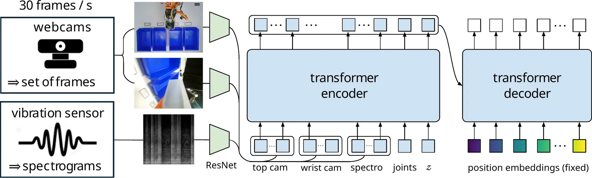
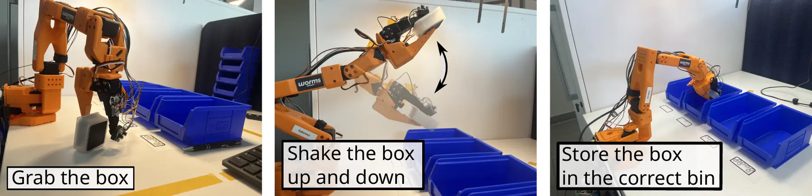
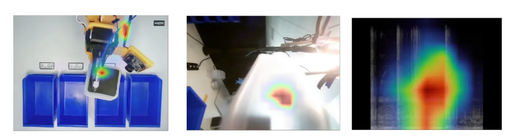
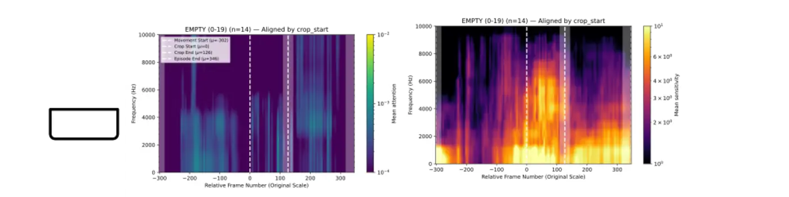

Combining static & dynamic touch
Piezoelectric sensors excel at transients but miss static loading. Pairing them with lower-frequency force estimates (e.g. actuator currents) could give a more complete picture of contact.
Learning tactile perception from high-bandwidth single-point sensing
1 Wormsensing, Seyssinet-Pariset, France · 2 Hugging Face, Paris, France · *Corresponding author

Tactile sensing is increasingly being incorporated into learning-based robotic manipulation, yet many existing approaches rely on spatially distributed sensors. Here we introduce SpectRobot, a framework that transforms single-point tactile signals into compact time-frequency spectrograms. These spectrograms encode high-bandwidth tactile histories as fixed-size image-like representations. They can be processed by standard vision encoders and integrated into learning pipelines originally developed for vision, while preserving temporal and frequency information unavailable to conventional cameras.
Rather than increasing spatial density through arrays of tactile elements, SpectRobot exploits the rich dynamics contained in sparse, high-bandwidth single-point measurements. The sensors are mounted away from the contact surface while remaining mechanically coupled to it, reducing direct exposure to wear and potentially improving robustness for long-term deployment on dexterous robots.
Our experiments demonstrate that (1) a robot can exploit single-point vibration signals to solve a visually occluded manipulation task; (2) temporal history strongly influences policy performance, while sensing bandwidth controls the spectral information available, with measurements extending to 100 kHz; and (3) the same representation can be used across different tactile sensing technologies mediated by acceleration, force, or strain.
We further show that capabilities previously associated with research-grade instrumentation can be accessed using readily available, off-the-shelf hardware — broadening access to high-bandwidth tactile sensing for embodied learning.

The robot picks up an opaque box, gently shakes it, and must infer one of four visually indistinguishable contents from vision and the resulting tactile spectrogram before placing the box in the corresponding bin. Select a box, then play all three synchronized camera views for a representative autonomous episode.
Gripper A — IEPE Dragonfly® sensor, 0–10 kHz, nFFT = 512 (2.9 s temporal history).
Seven sensing technologies — spanning acceleration, force and strain — were evaluated on three gripper designs, each instrumented on the upper jaw, away from direct contact. Choose an acquisition bench, then click a bar to highlight the sensor on its gripper and inspect its confusion matrix.
Trained ACT models were analyzed with Emboviz, a LeRobot visualization framework, using two diagnostics: attention (internal weights during the forward pass) and scene sensitivity (how the output changes when regions of the input are occluded). Maps are averaged over time and across successful episodes, per box class.


Left: mean attention. Right: mean scene sensitivity. Dashed lines mark the crop window used to build the spectrogram fed to the policy.
Piezoelectric sensors excel at transients but miss static loading. Pairing them with lower-frequency force estimates (e.g. actuator currents) could give a more complete picture of contact.
Several vibration sensors distributed over the structure could be encoded as additional image channels alongside RGB/depth — bridging high-bandwidth sensing with spatial localization.
Because tactile signals become images before entering the policy, SpectRobot should be largely agnostic to the downstream architecture, as long as it has an image-encoding stage.
Learned representations could reveal which aspects of contact dynamics — friction, impacts, deformation — are worth retaining in future physics models.
Questions about the paper, the dataset, or reproducing the bench? Reach out.